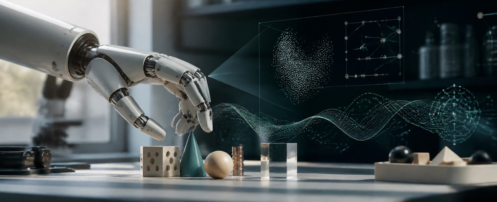

Research Areas
Advancing AI for Humanoid Robotics and Scientific Discovery

Humanoid Robotics & Visual Language Action
As a Principal Engineer at Humanoid in 2025, I led Vision-Language-Action development and advanced applied research in humanoid robotics. The work integrated AI-driven systems to enhance robotic capabilities and human-robot interaction, including models that connect visual and linguistic cues to physical action.
Key areas of focus include:
- Visual Language Action (VLA) Models: Developing systems that can process and understand both visual and textual information for robotic control
- Human-Robot Interaction (HRI): Designing interfaces and systems for natural human-robot communication and collaboration
- Multi-modal Learning: Integrating vision, language, and action in unified learning frameworks
- Robotic Control Systems: Creating algorithms for robotic behavior based on visual and linguistic inputs
AI for Science
My research in AI for Science focuses on applying artificial intelligence to accelerate scientific discovery and innovation. This includes work in collaboration with MILA and the University of Toronto, where I've contributed to papers in Digital Discovery and NeurIPS. The research spans various scientific domains, leveraging machine learning to solve complex problems in materials science, chemistry, and other scientific fields.
Key contributions include:
- Molecular Discovery: Developing AI systems for molecular design and optimization
- Scientific Data Analysis: Creating tools for processing and analyzing large-scale scientific datasets
- Predictive Modeling: Building models for predicting scientific outcomes and properties
- Automated Experimentation: Designing systems for automated scientific experimentation
AI for Electronic Design Automation (EDA)
My work in AI for EDA focuses on applying artificial intelligence to improve electronic design automation processes. This includes contributions to ICCAD 2024 and IEEE-ITC 2024, where I've worked on solving constrained combinatorial optimization problems in electronic design automation, resulting in 30% speed improvement in floorplanning techniques.
Research areas include:
- Combinatorial Optimization: Developing algorithms for solving complex optimization problems in chip design
- Floorplanning: Creating efficient algorithms for chip layout optimization
- Circuit Modeling: Building AI models for circuit behavior prediction and optimization
- Design Automation: Automating various aspects of electronic design processes
Deep Reinforcement Learning
My research in Deep Reinforcement Learning spans multiple applications and domains. I've conducted extensive work on Goal Conditioned DRL with Pieter Abbeel, Model-Based DRL research with Chelsea Finn at Stanford, and foundational models in Language Conditioned Imitation Learning with Heni Ben Amor at Arizona State University (recognized as a NeurIPS Spotlight Paper).
Key research directions include:
- Goal-Conditioned Policies: Developing policies that can achieve specific goals in complex environments
- Model-Based Learning: Creating models that can predict outcomes and plan actions accordingly
- Imitation Learning: Learning from demonstrations to improve robotic control
- Multi-Agent Systems: Developing coordination strategies for multiple agents
Robot Learning & Computer Vision
My research in robot learning focuses on developing systems that can learn complex tasks through various modalities. This includes work on visual sparse-reward learning, model-based adversarial imitation learning, and modular language-conditioned robot policies. I've also researched Imitation Learning from Perception on Robotic Surgery with Ken Goldberg.
Research areas include:
- Visual Learning: Enabling robots to learn from visual observations
- Language-Conditioned Policies: Creating policies that respond to natural language instructions
- Modular Learning: Developing modular approaches to robot learning
- Surgical Robotics: Applying learning techniques to surgical robotic systems
Foundational Models & Transfer Learning
My work on foundational models focuses on creating base models that can be adapted to various tasks and domains. This includes research on pretraining graph neural networks, learning transferable policies, and developing models that can generalize across different applications.
Key areas include:
- Graph Neural Networks: Developing GNNs for various applications including circuit modeling
- Transfer Learning: Creating models that can transfer knowledge across domains
- Pretraining Strategies: Developing effective pretraining approaches for various model types
- Multi-task Learning: Creating models that can handle multiple tasks simultaneously
Collaborations & Impact
My research is conducted in collaboration with leading institutions and researchers worldwide. I've worked with researchers from Stanford University, University of California Berkeley, Arizona State University, MILA, and the University of Toronto. These collaborations have resulted in publications in top-tier conferences including NeurIPS, ICML, ICLR, AAAI, CoRL, ICCAD, and IEEE-ITC.
The impact of this research extends beyond academic publications to real-world applications in robotics, manufacturing, healthcare, and scientific discovery. My work has contributed to advances in humanoid robotics, AI for science, electronic design automation, and computer vision.